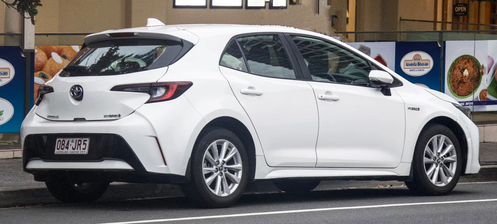
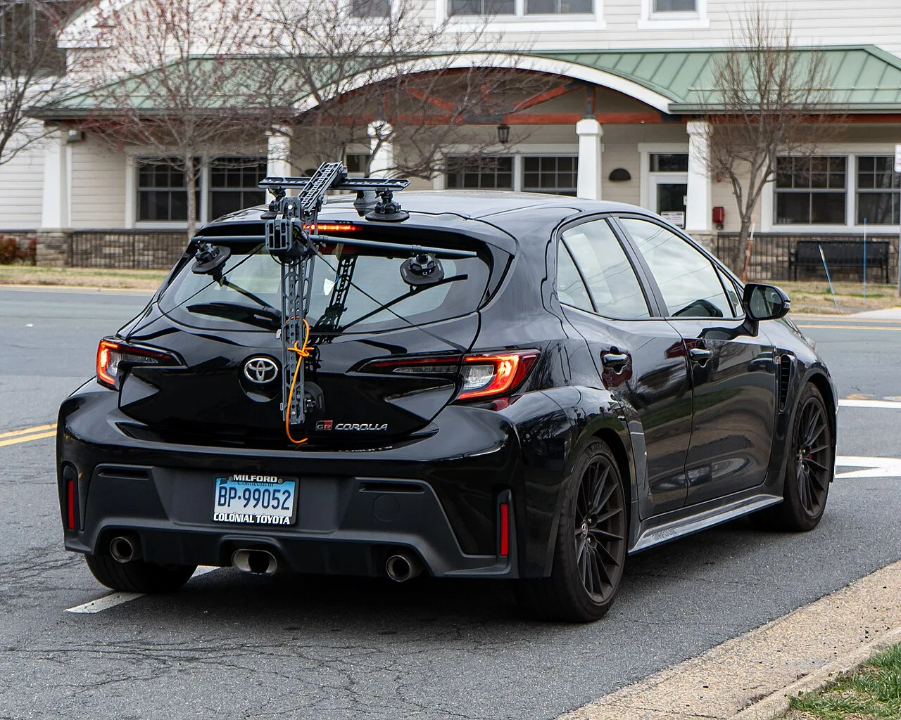

▲ 코롤라 60주년 스페셜 에디션은 미국에서 2,500대만 판매된다 ⓒ AnalyserOP, Wikimedia Commons (CC BY 4.0)
코롤라는 세계에서 가장 많이 팔린 자동차입니다. 1966년 첫 모델 이후 누적 판매는 어떤 차도 따라오지 못하는 수준입니다.
그 코롤라가 60주년을 맞았습니다. 토요타가 준비한 것은 2,500대 한정 스페셜 에디션입니다.
그런데 딜러 도착 시점이 2027년 초입니다. 글로벌 기념 시점도, 미국 판매 60주년 시점도 모두 지나간 뒤입니다.
1. 기념일을 놓친 기념 모델
이 한정판의 가장 특이한 점은 일정입니다.
코롤라는 1966년 일본에서 처음 나왔고, 미국 판매는 그보다 몇 해 뒤에 시작됐습니다. 60주년에 해당하는 시점은 이미 지나가는 중입니다.
그런데 이 차는 2027년 초에 딜러에 도착합니다. 결과적으로 글로벌 60주년도, 미국 판매 60주년도 모두 지난 뒤에 나오게 됩니다.
왜 이렇게 됐는지는 발표되지 않았습니다. 다만 한정판 개발과 생산 라인 배정에는 시간이 걸립니다. 전용 색상 하나만 추가해도 도장 라인에서 별도 운영이 필요합니다.
실용적으로 보면 큰 문제는 아닙니다. 기념일보다 차 자체의 값어치가 중요합니다. 다만 기념 모델의 상징성은 다소 희석됩니다.

▲ 미국 준중형 시장에서 코롤라는 기아 K4 같은 경쟁자와 맞붙고 있다
2. 무엇이 특별한가 — 그리고 무엇이 그대로인가
바뀐 것은 외관과 실내 마감입니다.
- 60주년 배지
- 사이드 데칼
- 18인치 머신드 에지 휠 — 블랙 도장
- 레드·블랙 인서트 스포츠 시트
- 알루미늄 스커프 플레이트
- 전용 플로어 매트
- 10.5인치 인포테인먼트 기본 적용 — 일반 모델에서는 옵션
색상은 두 가지입니다. 아이스 캡(화이트)과 수퍼소닉 레드이며, 레드는 이 에디션에만 들어갑니다.
바뀌지 않은 것은 파워트레인입니다.
| 항목 | 사양 |
|---|---|
| 기반 트림 | SE 하이브리드 |
| 엔진 | 1.8리터 자연흡기 4기통 하이브리드 |
| 출력 | 138마력 |
| 복합 연비 | 44mpg (약 18.7km/L) |
| 인포테인먼트 | 10.5인치 (일반 모델은 옵션) |
'스포츠 시트'와 '18인치 휠'이 들어갔지만 성능은 그대로입니다. 오히려 18인치 휠은 승차감과 연비에 불리하게 작용합니다. 외관 중심의 한정판이라는 점을 감안해야 합니다.

▲ 외관과 실내 마감이 바뀔 뿐 파워트레인은 SE 하이브리드 그대로다
3. 2027년형 가격 — 전 트림 500달러 인상
한정판 가격은 아직 발표되지 않았습니다. 기준이 되는 SE 하이브리드는 운송비 포함 2만8,910달러이므로, 그 이상이 될 것으로 보입니다.
2027년형 코롤라 세단은 전 트림이 500달러씩 올랐습니다.
| 트림 | 가격 |
|---|---|
| LE | $23,325 |
| LE Hybrid | $25,175 |
| SE | $25,765 |
| SE Hybrid | $27,615 |
| SE Hybrid AWD | $29,015 |
| XLE Hybrid | $29,540 |
가격표에서 읽히는 것이 하나 있습니다. LE와 LE 하이브리드의 차이가 1,850달러입니다.
미국 연비 기준으로 이 차이는 몇 년이면 회수됩니다. 코롤라 하이브리드의 복합 44mpg는 가솔린 모델과 상당한 격차를 냅니다. 그래서 하이브리드 비중이 계속 올라가는 구조입니다.
4. 60년을 버틴 차의 방식
코롤라가 세계 최다 판매 기록을 만든 방식은 단순합니다.
- 고장이 적다 — 검증된 구조를 오래 쓰고, 새 기술은 늦게 넣는다
- 수리가 싸다 — 부품이 흔하고 정비 지식이 널리 퍼져 있다
- 중고 가치가 유지된다 — 위 두 가지의 결과다
- 시장마다 다르게 판다 — 세단, 해치백, 왜건, 크로스오버로 변형된다
이 전략의 대가는 재미없다는 평가입니다. 토요타도 이를 알고 있어서, GR 코롤라 같은 고성능 모델을 별도로 두고 있습니다.
60주년 에디션이 SE 하이브리드 기반이라는 점도 이 맥락에서 읽힙니다. 기념 모델조차 성능이 아니라 효율과 실용 쪽에 서 있습니다.
내구성에 관한 사례도 자주 언급됩니다. 124만 마일(약 200만 km)을 달린 1993년식 코롤라가 화제가 된 적이 있습니다. 2,500대 한정판보다 그 차가 코롤라를 더 잘 설명한다는 반응도 있었습니다.

▲ 토요타는 성능 수요를 GR 코롤라로 따로 받는다. 60주년 에디션은 효율 쪽에 서 있다
5. 정리
토요타가 코롤라 60주년 스페셜 에디션을 미국에서 2,500대 한정으로 판매합니다. SE 하이브리드 기반이며 1.8리터 하이브리드 138마력, 복합 44mpg 구성입니다.
색상은 아이스 캡과 이 에디션 전용인 수퍼소닉 레드 두 가지이고, 18인치 블랙 머신드 휠과 레드·블랙 시트, 10.5인치 인포테인먼트 기본 적용이 특징입니다.
딜러 도착은 2027년 초여서 글로벌·미국 60주년 시점을 모두 지난 뒤가 됩니다. 한정판 가격은 미발표이며, 2027년형 코롤라 세단은 전 트림 500달러 인상됐습니다.